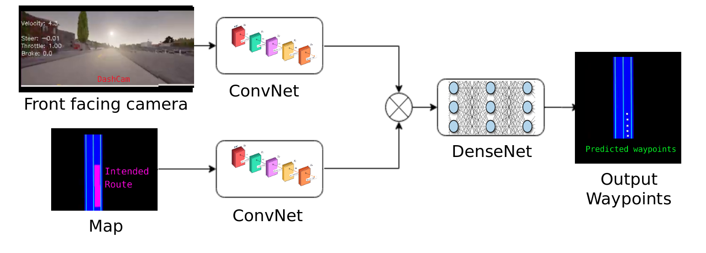

Autonomous driving with just a Camera and a route planner
In this work, I addressed the Autonomous Driving in a slightly peculiar way, in a more human-centric fashion, such that one can clone human-driving behavior by dividing the overall pipeline into data-based and math-based blocks! In other words, I tried to identify a 'sweet-spot' for spliting the end-to-end pipeline and also to reason on the trade-offs between data-based and math-based techniques. Besides, I put emphasis on using minimal and cheap sensors!
What...
The overall idea is to explore Imitation Learning in an End-to-Mid fashion, in particular, on predicting desired waypoints using only camera and route planner (basic map) images and then on executing those waypoints using a dedicated control. The intuition behind this apporach will be explained in a bit. Here, the notion is to combine the perception and planning step together (i.e. to predict the waypoints directly from the vision -- similar to human-driving). Since, this work is inspired from human driving, no sophisiticated sensors such as Lidar or HD maps were used. Only a camera and basic maps were used to match the human driving.
A little background...
Just to get the intuition, imagine for some random reason, you want to travel between some random places, for instance say that you want to travel from your house to your friends house. Most probabily you would first get into your car and put the destination on your phone and then we would simply drive just by looking at the things on & off the road and obviously according to your phone's navigation as well. Isn't it?
To put things firmly, we humans use our vision to 'drive' and a map to 'navigate'
We humans do not use any sophisticated sensor such as Lidar, HD maps, Radars...
With that said, now lets move ahead and build intuitions on why should we predict the waypoints? why not just detect all the needed objects (such as vehicles, pedestrians, lane marking, traffic light...) and then put them in some occupancy grid and further work on it -- a.k.a Modular-pipeline approach? or why not just directly map the raw inputs to the outputs -- a.k.a End-to-End approach? I acknowledge that various other approaches exists and I'm mentioning these two based on the research density
Although, the above mentioned approaches are promising, they have their drawbacks because of the very nature of their architecture. One can mitigate this by identifying a spot in between these two extremes such that we can combine the benifits of the both apporaches a.k.a End-to-Mid learning approach. However, the question is where is that 'mid'? Coz, one can break the End-to-End pipeline in various ways. Voila! that is what this study is all about. For this I mainly used intuitions from human-driving and reframed the autonomous driving problem, i guess, in a more human-like manner. Also by utilizing the well-established math-based techniques for certain parts in the pipeline.
To get a sense, imagine that you are driving a car and you see the below image...
Current trend is to detect and place all the objects in an occupancy grid and then plan a suitable maneuver/trajector that needs to be taken (as in below figure)

Is it human-like diving? I would say No. If we take a moment and ponder, one can grasp the fact that we do not 'intentionally' searching for vehicles, pedestrians, traffic signs. We take the image a single input and process it to get our final maneuver. Isn't it? Something similar to below image.
I do agree that we have to take account of other vehicles, pedestrians... But we detect them in a more subtle way, isn't it? To convince yourself, ask youself whether would you detect those objects 'intentionally' every single time? For instance, look the following images.
Did you 'intentionally' search for others vehicles? or pedestrian? or traffic signs? or you simply ended up visualizing something like in the below image.
It is not that we do not have to detect those object, it is more like, we humans are doing it implicitly (similar to hidden layer in neural networks). The other reason is that, we can greatly reduce the dimension of network's output space (rather than predicting thousands of states). Indication that we can reduce the burden of our optimization (machine learning) algorithms. Also that we don't have to make predictions on states that would rarely happen on every single inferences.
Besides, we can complete the pipeline with a well-established techniques (for vehicle control) to execute those predicted waypoints.
Why camera and map?
I believe it is intuitively reasonable why they go together and why they would fail when used stand-alone! For example, consider you are using only the camera, in that case, there will be no information for the network to take the decision in the road intersections. On the other hand, if we use only the map, we would not have information about other vehicles, pedestrians or traffic lights to take appropriate actions. Besides, the map would provide only the 'spatial' waypoints, however, we need 'temporal' waypoints to navigate. Additionally sometimes, we might need to intentionally deviate from those spatial waypoints (from map). For example, imagine some random car is parked partially on the side of the road, in that case, we would normally nudge to the other side while crossing that parked car, right? (i.e. intentionally we are deviating from the spatial waypoints). With that said, we would combine these two sensors to match human-driving.
Camparison to real world...
Since I used simulator (Carla) for this study, I wanted it to be as close to reality as possible. Here is the visualization between the simulation and real-world,

To emulated the Google/Apple map, we used the ground truth data from the simulator (roads and intented route). the blue-line in GoogleMap (intended route) is emulated as a pink-line in the simulated map.
Network architecture...
The overall idea is to get high-level features from Camera and Map images using ConvNet and then to fuse them to predict the desired waypoint.
Note: in the above image, the output predictions were overlayed on top of the map for visualization purpose, in reality only those white dots are predicted.
I'm trying to predict the 'desired temporal waypoints' (i.e. where I should be after 1 sec, 2 sec...) Once we have such waypoints, we can interpolate them to find the needed steering (from the curvature) and throttle (from spacing between waypoints)
For training, we used the collected ground truth data (i.e. actual location of ego) by time-shifting them to get the targets labels.
We have to notice that because of high correlation between input map and output predictions, during training, the network might get stuck at optimal point which could give more weitage to the input map than the camera image. In order to remove this undesirable correlation, I added a decaying probability (w.r.t epoch) to the input map (i.e only certain training samples will have the map data). This pushed the network a optimal point that gave weitage to both map and camera images.
Results...
The major objectives are to,
- lane Keep (driving straight, as well as, corners)
- turning at intersection (based on the map)
- obeying traffic light
- avoid collision with pedestrian
Lane keeping and intersection...
We can see that the ego is able to drive straight, turn, and also handle intersection based on the map. If we notice the spacing between waypoints, they would get slighly closer when approaching a turn, indicating that ego vehicle has to slow down. (benefits of imitation learning!)
traffic light...
Note: The green line represent the length of the waypoint (and used as a base for comparison)
We can see that waypoints get cluttered to a single point, indicating the ego has to stay in the same location (i.e. stop).
Pedestrian...
The ego was able to slow-down as well as stop based on the situation.
Thesis & References...
For more details, check here.
Also, feel free to use dicussion section below.
...
My next work study be on sequential learning and attentions... again trying out things in more human-like fashion...